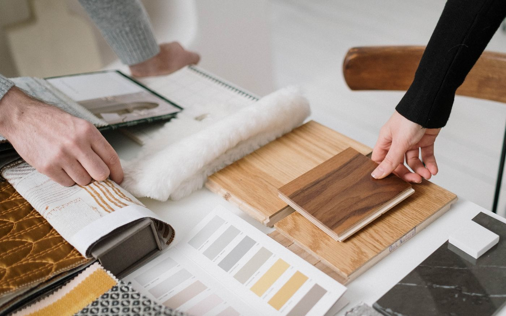

À propos
Un média pratique sur la pose du parquet
Pose Parquet documente ce qui se décide avant la première lame : le support, le sens, le motif, la méthode.
Pourquoi ce site
La documentation sur le parquet se partage entre catalogues commerciaux et notices techniques. Entre les deux, il manquait un endroit pour comprendre les décisions : pourquoi ce sens plutôt qu'un autre, ce que change réellement un ragréage, ce qui distingue deux motifs à chevrons.
Notre méthode
Chaque contenu part d'une question concrète et se termine par une décision possible. Les chiffres cités correspondent aux pratiques courantes du métier et aux seuils usuels des documents techniques. Lorsqu'un sujet dépend du produit, nous le disons plutôt que de généraliser.
Des outils plutôt que des promesses
Le simulateur de pose est le premier d'une série. L'objectif est simple : transformer une hésitation en visualisation, puis en décision.
Indépendance
Le site ne vend rien et n'héberge aucune publicité. Quelques liens sortants pointent vers des ressources externes lorsqu'elles complètent le propos, sans contrepartie éditoriale.

Un projet de pose à préparer ?
Décrivez votre pièce, votre support et le rendu recherché en cinq étapes. Vous recevez une réponse construite, sans démarchage.